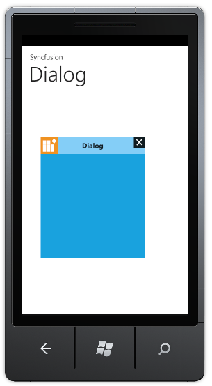

By default phone accent color will be the title bar theme. You can customize the title bar theme as needed. To customize the theme, set the TitleTheme property of Dialog to any SolidColorBrush.
The following code illustrates how to customize the title bar theme:
|
[XAML] <syncfusion:Dialog x:Name="dialog" IconVisibility="Visible" TitleTheme="LightSkyBlue" TitleVisibility="Visible" Icon="/syncfusion.png" Title="Dialog" HorizonatlOffset="-200" VerticalOffset="-200" Background="{StaticResource PhoneAccentBrush}"> |
|
[C#]
Dialog dialog=new Dialog(){ IconVisibility=Visibility.Visible,TitleTheme=new SolidColorBrush(Colors.Blue), Icon=new BitmapImage(new Uri("/syncfusion.png",UriKind.Relative)), Background=Application.Current.Resources["PhoneAccentBrush"] as SolidColorBrush, HorizonatlOffset=-200, VerticalOffset=-200,Title="Dialog" ,TitleVisibility=Visibility.Visible, IsBackKeyClose=true, IsTapOutside=true, IsDrag=true};
|

Figure 90: Customized Title Bar